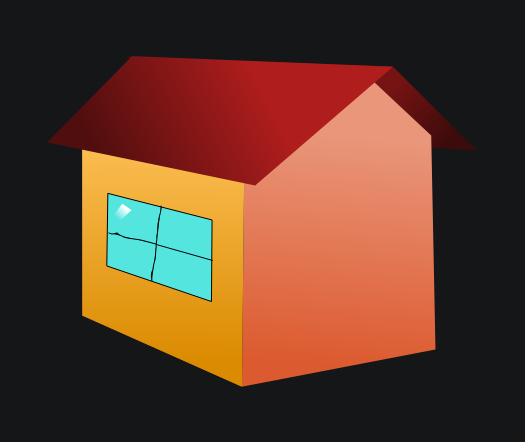

Published on 7/11/2026
This is the first post on my stupid blog, which has the worst written html and css you will EVER see. Like don't even dare opening the html and css of the home page, it's uhh, terrible.
Besides that, hi! i'll write here when i feel like writting here.
So i have taken a break from working on the website more recently, but today a bunch of things happened. Other than this blog, i'm starting on redesinging the icons. The original plan was not for crappy icons that were whipped toghether in krita within 5 minutes, but for actually good icons. I started messing around in inkscape, and the results are looking pretty good!

It does still feel a little flat, but this is pretty good for a first thing.
Another thing i want to do is a "vault tab" under the music tab. I have some bad quality music, or previous versions of the 4 only songs i've officially released that i want to just have available.
Anyways thx for reading my first blog post k thx bye!!!
go back to blog home